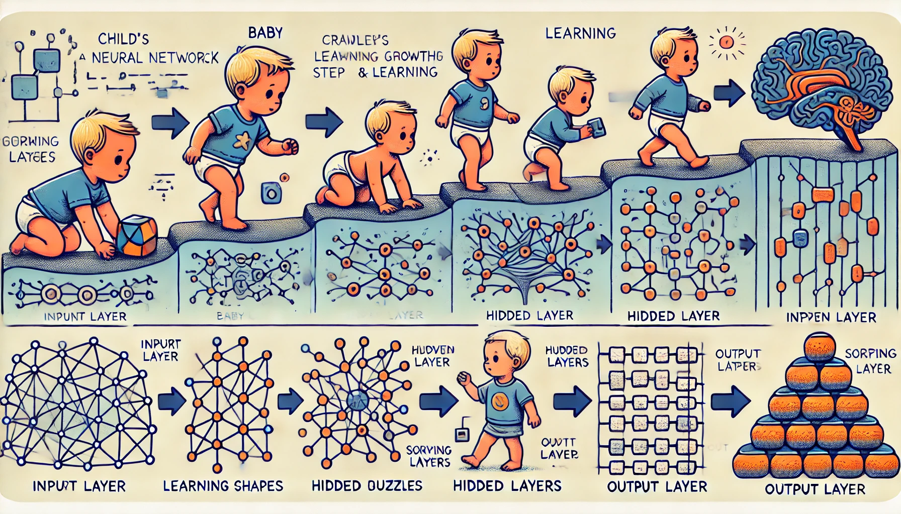
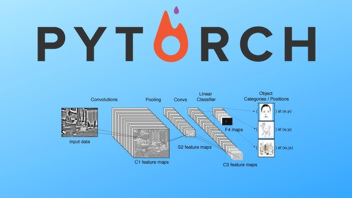

Neural Networks! Deep Learning! Artificial Intelligence!
1. Introduction
The term “Neural Networks” might make you think of biology class, but these powerful tools are far more than just brain-inspired diagrams. They are shaping our world in ways you might not realize, from analyzing medical scans to suggesting your next favorite song. Think about learning to ice skate: you don’t start by gliding effortlessly; you fall, adjust, and gradually improve. Neural networks learn in a similar way—by processing data, identifying patterns, and refining their predictions with each iteration.
For example:
- Imagine teaching a computer to spot cancerous cells in medical images. Instead of coding rigid rules for cell size and shape (which can vary wildly), you show it thousands of scans—some cancerous, some healthy. The network identifies subtle patterns in texture, density, and structure, strengthening its connections as it learns to differentiate between the two.
- Similarly, for music recommendations, neural networks analyze data about songs and listening habits. They find subtle links between genre, tempo, and artists, predicting what you’ll want to hear next.
Neural networks excel at learning directly from data, uncovering patterns we might overlook, making them invaluable for everything from voice recognition to predicting disease outbreaks.
2. What Neural Networks Consist Of?
Now you might be curious—how does this seemingly complicated task take place? How can a computer analyze images, find patterns, and provide a desired result? Let’s break it down with a relatable analogy: raising a child from birth to adulthood. Neural networks process data and refine their understanding step by step, just like a child learns and grows.
2.1 Layers of Growth (Neurons)
A neural network consists of layers, similar to how children grow through stages of development:
Input Layer (Birth)
This is where it all begins. The child is born with raw potential and starts exploring the world. Similarly, the input layer of a neural network receives raw data, such as images, text, or numerical values.
For instance, a baby might play with toys or listen to simple words—this represents the initial exposure to data.
Output Layer (Adulthood)
The child matures and applies all the knowledge they’ve gained to make decisions and solve problems. In a neural network, this corresponds to the output layer, which generates the final prediction—such as identifying an object in an image or recommending a song.

2.2 Weights and Priorities (Parental Guidance)
Not all lessons are equally important during a child’s development. Parents emphasize crucial values, just like neural networks assign weights to prioritize specific inputs:
- Safety might receive the highest priority, with repeated lessons on looking both ways before crossing the street (high weight).
- Less critical lessons, like tying shoelaces, might be less emphasized (low weight).
In a neural network, weights determine how much influence each input has on the final result.
2.3 Activation Functions (Critical Moments)
A child doesn’t act on every piece of information—they decide what to use based on relevance and importance. Similarly, activation functions in a neural network determine which information to pass forward:
- For example, if a child hears advice, they “activate” that knowledge during relevant situations, like sharing toys at school.
Neural networks use activation functions like ReLU and Sigmoid to decide which signals are meaningful.

2.4 Data (Life Experiences)
A child’s growth depends on their life experiences, just like a neural network’s performance depends on the quality and quantity of data:
- Training Data: Early experiences, such as learning to walk and talk, help the child develop foundational skills.
- Validation Data: Teachers or parents provide feedback during specific learning stages to ensure the child is on track.
- Test Data: Real-life challenges, like solving problems independently, test the child’s ability to apply what they’ve learned.
3. How Neural Networks Function
Now that we’ve explored what a neural network consists of, let’s dive into how it functions using the same analogy of raising a child. Neural networks, like children, learn through trial and error, guided feedback, and practice until they become skilled at their tasks.
3.1 Learning Through Trial and Error
Imagine teaching a child to ice skate. The process involves:
- First Attempt: The child steps onto the ice, wobbles, and falls.
- Feedback: You offer guidance: “Bend your knees a little, keep your arms out for balance, and take small glides.”
- Adjustment: On their next attempt, the child applies the feedback and improves.
Over time, with practice and corrections, the child learns to balance, glide, and eventually skate confidently.
Similarly, a neural network learns through repeated cycles of trial and error:
- Forward Propagation: The network processes input data, layer by layer, to make an initial prediction.
- Error Calculation: It calculates how far its prediction deviates from the correct answer.
- Backpropagation: Errors are sent backward through the network, and the system adjusts its internal weights and biases to minimize future mistakes.
- Iteration: This process is repeated across many cycles (called epochs), enabling the network to gradually improve its accuracy.
3.2 Generalizing From Experience
Once the child has practiced enough, they can confidently ice skate on different types of surfaces—whether it’s a frozen lake, an indoor rink, or even slightly bumpy outdoor ice. This ability to generalize from past experiences is crucial.
Similarly, a trained neural network:
- Can apply its knowledge to new, unseen data.
- For example, after learning to identify cats and dogs in images, it might also recognize other animals, like lions or wolves, even if it hasn’t seen them before.
4. Real-World Applications
Neural networks have a wide range of real-world applications:
- Healthcare: Detecting diseases, predicting outcomes, and drug discovery.
- Finance: Fraud detection and investment optimization.
- Entertainment: Personalized recommendations on platforms like Netflix and Spotify.
- Retail: Product recommendations, pricing, and inventory forecasting.
- Autonomous Vehicles: Real-time object recognition and decision-making.
5. Why Are Neural Networks Revolutionary?
Neural networks excel where traditional programming fails:
- Learning from Data: They adapt based on the data they receive.
- Pattern Recognition: They uncover subtle, non-linear relationships.
- Scalability: Performance improves with more data.
- Versatility: They tackle diverse challenges, from language processing to computer vision.
- Continuous Improvement: They refine their performance over time.
6. Getting Hands-On with Neural Networks
- Understand the Basics: Learn key concepts like weights, activation functions, and backpropagation.
- Use Pre-Built Libraries: Tools like TensorFlow, PyTorch, and Keras simplify implementation.

- Experiment with Data: Start with datasets like MNIST or Iris. Kaggle has various datasets.
- Practice Iteratively: Train, evaluate, and fine-tune models.
- Join Communities: Engage with online AI communities for guidance and resources.
7. Conclusion
Neural networks, inspired by human learning, drive modern AI. Their ability to adapt, uncover patterns, and solve complex problems is transforming industries. Whether you’re a beginner or an expert, exploring neural networks opens the door to endless possibilities in artificial intelligence. For getting more information on the topic please go through the references.
References
- LeCun, Y., Bengio, Y., & Hinton, G. (2015). Deep learning. Nature, 521(7553), 436–444. https://doi.org/10.1038/nature14539
- Goodfellow, I., Bengio, Y., & Courville, A. (2016). Deep Learning. MIT Press. http://www.deeplearningbook.org/
- Chollet, F. (2017). Deep Learning with Python. Manning Publications.
- Brownlee, J. (2019). A Gentle Introduction to Neural Networks. https://machinelearningmastery.com/neural-networks-crash-course/
- Kaggle Datasets. https://www.kaggle.com/datasets